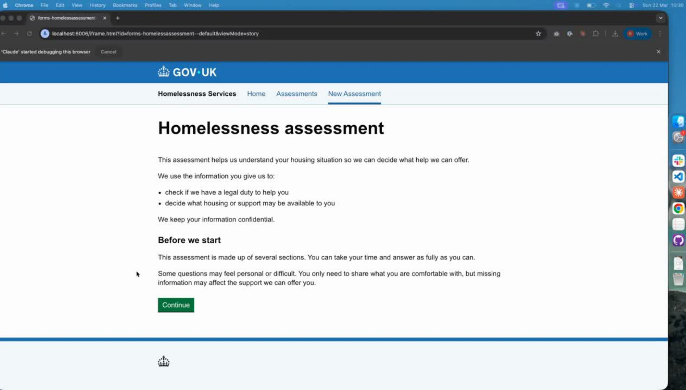
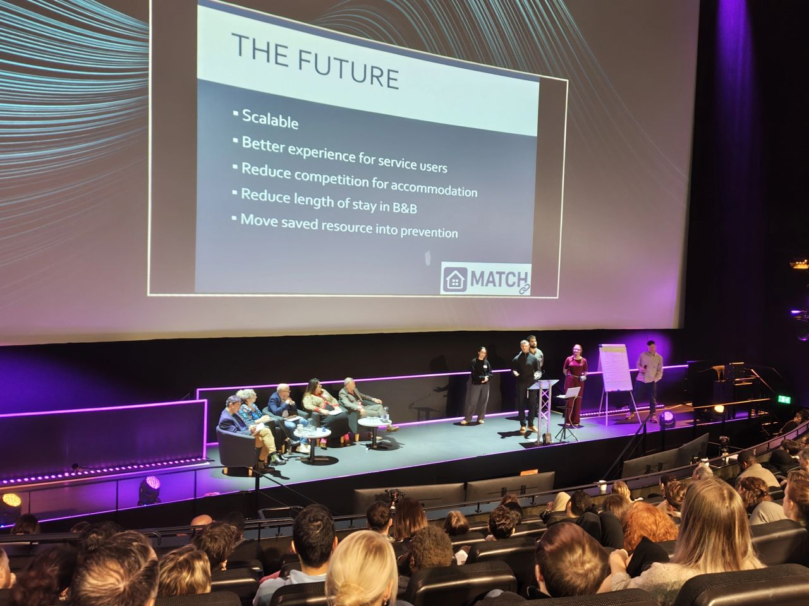

MATCH: AI-powered homelessness accommodation matching
How a 48-hour hackathon became a working prototype, researched with people who've experienced homelessness, presented to MPs in Parliament, and built for a system that was long overdue a rethink.
MATCH won the Gov.uk Homeless Hackathon with an AI-powered accommodation matching prototype that replaces a two-hour manual process with a four-step AI-assisted workflow. Working with a team drawn from across government, I led the user research, speaking to people who've experienced homelessness, service users and frontline caseworkers, and three months after winning I presented the solution to MPs in Parliament.
This one was personal before it was professional
Before moving into tech I spent years at Citizens Advice working directly with people experiencing homelessness, so I understood the system's failures from the inside, from the endless form-filling to the mis-entries to the placements that made a crisis worse.
When I heard about a government hackathon using AI to tackle homelessness, joining wasn't a career decision so much as an obvious one. The brief was open, however we chose to focus on temporary accommodation matching, a high-stakes process that was still largely manual and failing people because of it.
12,000 officer hours. Still producing bad matches.
Based on Sheffield City Council's data, councils handle around 6,000 accommodation matches a year, and each manual match takes roughly two hours.
Pulling together needs assessments, checking property records and cross-referencing risk information adds up to 12,000 officer hours annually, the equivalent of 7.3 full-time staff, spent on matching alone. And it still goes wrong, because risk data gets mis-entered and unsuitable or unsafe properties get assigned, so officers start again, which costs time the system doesn't have and puts a vulnerable person, often a family in crisis, in the wrong place.
What a bad match looks like in practice
A composite case, based on real experiences, shows the cascade a bad match sets off in a single afternoon.
Shaheen arrives, fleeing domestic violence
She comes to the council with her three children, needing somewhere safe that day.
Offered an unsafe property
A home three miles from her danger zone, because risk data had been mis-entered. The match was unsafe, so back to searching.
A B&B housing adult men
A second option, 45 minutes from her support network and 90 minutes from her children's schools. When she arrived, it wasn't safe either.
She paid for a hotel herself
The out-of-hours line had no alternatives left to offer.
This isn't an edge case, it's what the system produces when it's under pressure and running on manual processes, and the cost isn't just financial, since every bad match is a family in the wrong place at the worst possible moment.
Four steps to replace a two-hour manual process
We built MATCH to replace the manual workflow with a four-stage AI-assisted process that keeps the officer in control throughout, so AI handles the information processing while humans make the placement decision.
The officer records the needs assessment verbally rather than filling in forms, the audio is auto-transcribed with key needs, risks and exclusion zones extracted, a weighted algorithm scores available properties against the household profile, and the officer reviews ranked results with reasoning before making the final call.
Voice recording
Officer records the needs assessment verbally. No forms.
Auto-transcription
Needs, risks and exclusion zones extracted from the audio.
Weighted matching
Properties scored against the household profile. Transparent, not black-box.
Officer review
Ranked results with reasoning. The officer makes the final call.

Design decisions I owned
As the UX designer on the team my job was to make sure the prototype was built around the people who'd actually use it rather than just being technically functional, which meant driving the design decisions and leading the research.
We won the hackathon, then started the real work
Winning was the beginning rather than the end, so before making any further improvements I insisted on proper user research.
Voxpopme gave us free access to their platform, which let us speak to three distinct groups in a way most hackathon projects never manage.
People with lived experience of homelessness
Understanding the emotional reality of the matching process from the household's perspective. What felt dehumanising, what built trust, what they needed officers to know.
Local authority service users
People who had navigated the council housing system, whose experiences shaped our understanding of where the process breaks down in practice.
Frontline caseworkers
The primary users of the tool, whose direct and practical feedback shaped improvements in the next iteration.
What came through most clearly was that caseworkers wanted the tool to remove the parts of the job that ate their time without adding value, the cross-referencing, the data entry, the re-searching after a failed match, so they could spend that time with the people in front of them rather than in spreadsheets.
From hackathon to Parliament, then out across the country
The prototype won the hackathon outright, and three months later I presented it to MPs in Parliament, standing up to explain both the problem and what we'd built to an audience that could actually act on it.
That took a different kind of design work, translating a technical prototype into a narrative that landed for a policy audience, so I wrote the full presentation structure and the speaker notes for a 13-slide deck, and I created a short showreel to show off the research I'd done.
What came next mattered more than the win itself, because my research was handed to a team looking into homelessness who are taking the idea further across the country with a full UX team behind it. I consulted on that work in my own time to help them get it off the ground, which meant the thing that started as a 48-hour prototype now has a route to genuinely national impact.

What I took from this
The projects that matter most are rarely the ones that start with a clean brief and a full team, and MATCH started in 48 hours with people I'd never met, solving a problem I'd cared about long before I worked in tech.
The design decisions that held up under scrutiny, voice recording, interpretable algorithms and officer control, weren't clever ideas so much as things that came directly from understanding the people using the system, which is why the research we did after winning mattered as much as anything built during the hackathon itself.
Presenting to MPs was a reminder that design work has a life beyond the screen, however the part I'm proudest of is quieter than that, since the research outlasting the hackathon and being taken national by another team is the clearest sign the work was built on something real.